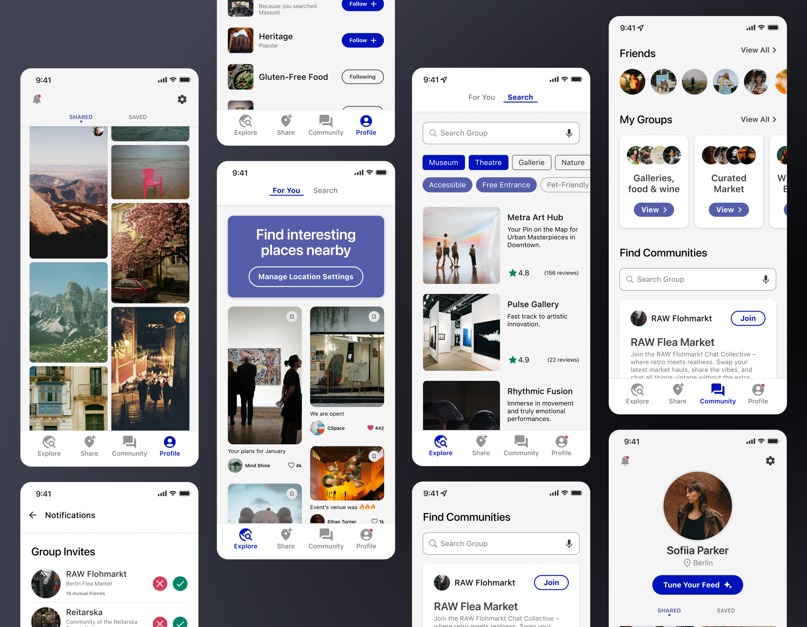

product design
Locatour — travelling mobile app
Locatour is a mobile application that provides personalised
traveling recommendations in the form of user-generated "fast
content". This social network enables travelers to join
communities and exchange useful information.
January 2023 · 2 min read
Background

What if a social media platform can turn into a personalised
search engine making your traveling experience authentic?
Would be available on iOS and Android, the app is an audiovisual
recommendation system for travelers providing them with
real-time updates based on Azure Stream Analytics technology.
The target audience includes travelers who need help when
visiting new places, users looking to change their place of
residence, and influencers keen on sharing interesting spots.

Recommendation System
The onboarding process in the app prompts users to pick a few
categories of interest, for which they provide reaction-based
feedback by liking or skipping cards (also known as swiping).
That allows the system to show personalised results from the
very beginning.
The content-based filtering continuously recommends results with similar content to the one the user liked.
Next, the collaborative filtering begins when we get to know the user better and connect this information with user ratings. Leveraging the user-to-user approach, the system looks for dependencies between users, so the recommended results (e.g. places) for a traveler are based on what other similar users liked. With the item-to-item approach, we also find similarities between user-generated content (e.g. shared tourist attractions), then because the user likes one place the other most similar will be recommended.
The content-based filtering continuously recommends results with similar content to the one the user liked.
Next, the collaborative filtering begins when we get to know the user better and connect this information with user ratings. Leveraging the user-to-user approach, the system looks for dependencies between users, so the recommended results (e.g. places) for a traveler are based on what other similar users liked. With the item-to-item approach, we also find similarities between user-generated content (e.g. shared tourist attractions), then because the user likes one place the other most similar will be recommended.
User Needs
Locatour connects people in travelling experience and helps them
to find friends in new places.
The platform’s map is always up-to-date and shows open places
where the traveller can get necessities, exchange currency, etc.
It also helps to find places where the staff speaks a specific
language (e.g. English-speaking) for those who don’t know the
foreign language.
The app empowers the development and growth of local
communities and embraces sharing authentic content.
Safety
All users are verified and comply with community guidelines.
The full name is required for the Sign Up, but the user can
hide it and display their nickname instead. Also, they can
choose who sees their avatar. The platform’s guidelines
include recommendations like posting the story from the
visited place only after you left it, posting sensitive
information like departure dates is not allowed, one should
not disclose if they travel alone, etc.

Community
Thriving communities are essential in Locatour. Users create
groups by places or activities of interest, where they can share
insights and make plans to visit, say for example, exhibitions
together.
We saw the evident need for that as people already were building
local networks across social media accounts and in messengers.
Users update the map, discuss topics related to the place,
provide advices like where to buy food or rent, share
authentic photos. The group can be of a restricted
access, administrated. You can keep a group public, like a
channel, for example to update everyone on the events in your
community cafe.
Video Description
The video doesn't contain any sound. It demonstrates the prototype of the Locatour mobile app. The app has five tabs: "Explore," "Share," "Community," and "Profile."
Starting with the "Explore" tab, users can browse their personalized "For You" feed that displays content generated by other users which you can like and bookmark. The user can switch to the "Search" with segmented control navigation to search for places by text or using voice control. They can also filter search results by type using multiple-choice chips e.g. "museum," "theatre," or by place's characteristics like "accessible," "free entrance," or "pet-friendly." The search results display places' ratings and reviews.
The "Community" tab lets users quickly access their groups and messaging with friends. They can also search for and join communities that are local and themed by places of interest.
In the "Profile" tab, the user has their own posts grid, and they can "Tune" their feed by following specific topics. Additionally, there is a notification center where they can view, accept & decline connection requests and group invites.